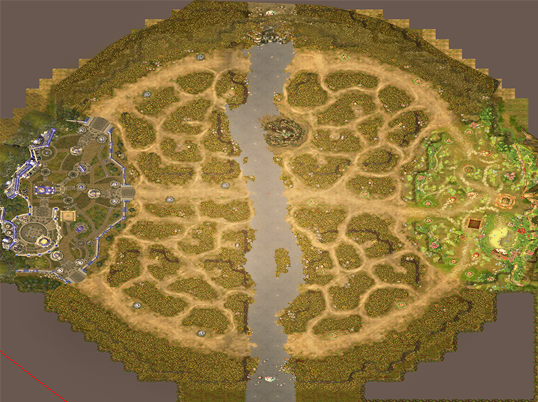

新年边境
独立季节摆放场景，保留三路塔营核心关系，部分怪物与美术被替换。

模式目标与比赛流程
独立季节摆放场景，保留三路塔营核心关系，部分怪物与美术被替换。
怎样获胜：仍以摧毁核心为胜利条件
运行参数与地图对象
| 关键字段 | 本模式取值 | 解释 |
|---|---|---|
| 玩家数量 | 5v5 | 不直接等于地图静态英雄占位数 |
| 场景 | 新年边境 | 同一场景可以被不同模式复用 |
| 开局 Prime / 队 | 本页不单独确认 | 可能被具体模式配置覆盖 |
| 被动 Prime 配置 / 次 | 本页不单独确认 | 按实际触发次数统计，不直接等于总时长乘每秒 |
| 开场延迟 | 依模式脚本或继承配置 | 开场延迟不等于第一波/首领实际出现全部时刻 |
当前使用经典边境小地图作为位置关系参考；该变体有独立的对象配置，具体数量与脚本优先以原版条目为准。
当前使用经典边境小地图作为位置关系参考；该变体有独立的对象配置，具体数量与脚本优先以原版条目为准。
计算公式与可复核算例
本模式的具体出兵、奖励、复活与攻击倍率，应查看对应章节和配置；没有经过单独核对的字段不照搬经典 PvP。
玩法原理与详细数据
以下内容保留上一版逐项来源与校验说明，用于进一步核对战斗目标、胜负链和脚本限制。
7. 新年、夜间、烈焰、万圣节及旧边境
| 资源族 | 本版状态 | 确认的差别 | 不应作出的推断 |
|---|---|---|---|
| 新年 | 主列表＋生产允许 | 独立摆放，经典建筑链；龙点内嵌刷怪器替换部分单位；总 18 中立点；300／180 秒昼夜 | 有独立地图文件就必然有全新胜负规则 |
| 夜间地图 | 未入主列表，生产允许标记为真 | 初始夜晚，白昼 30 秒、夜晚 120 秒；16 中立点 | 等同已证实正式运营模式 |
| 烈焰地图 | 未入主列表，禁止生产 | 17 中立点；白昼 1200 秒、夜晚 600 秒 | 只是经典地图换红色，所有数值完全相同 |
| 万圣节 | 主列表只登记 1 对 1 测试项 | 独立 Mod9 场景，16 中立点 | 本版存在已核实的正式 5 对 5 万圣节入口 |
| 旧边境 PFmap | 历史资源族，未入主列表 | 原基础图 15 中立点；仍有旧规则变体与练习配置 | 与新 MOBA 同名就把两者重复计数为当前模式 |
来源：Data/Maps/Multiplayer/MOBA/NewYear/_.ADMP.xdb、Data/Maps/Multiplayer/MOBA/NightMap/_.ADMPDSCR.xdb、Data/Maps/Multiplayer/MOBA/NightMap/_.ADMP.xdb、Data/Maps/Multiplayer/MOBA/Map2/_.ADMPDSCR.xdb、Data/Maps/Multiplayer/MOBA/Map2/_.ADMP.xdb、Data/Maps/Multiplayer/MOBA/Mod9/Test_PVP_1x1.ADMPDSCR.xdb、Data/Maps/Multiplayer/PFmap/PVP.ADMPDSCR.xdb、Data/Maps/Multiplayer/PFmap/_.ADMP.xdb。

旧图来源：Data/UI/Styles/MiniMap/PvP/_N.dds。它用于历史对照，不能替代当前经典 MOBA 底图。新年与末日场景引用的原版小地图资源仍属于 MOBA 图组；本稿不根据目录名自行生成一张伪原版“节日小地图”。